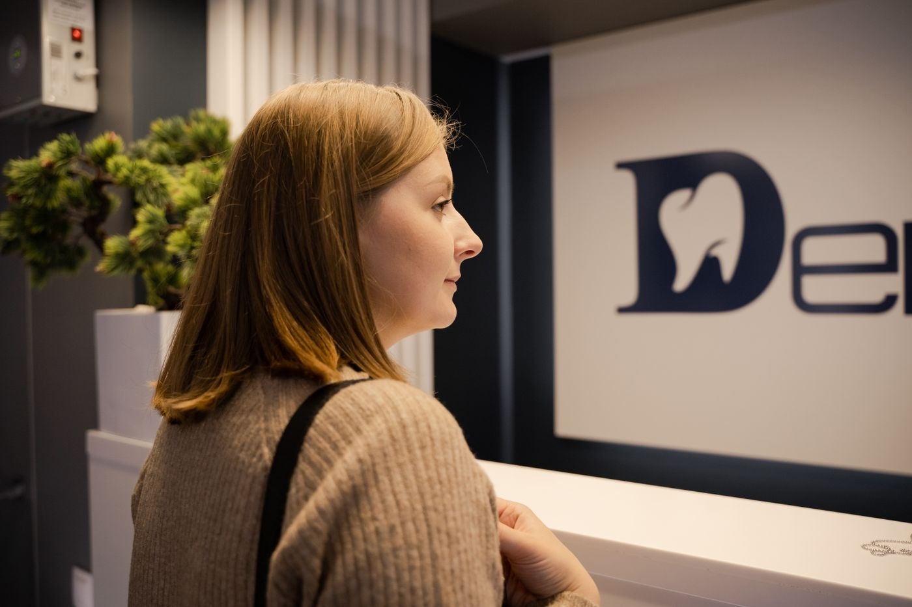
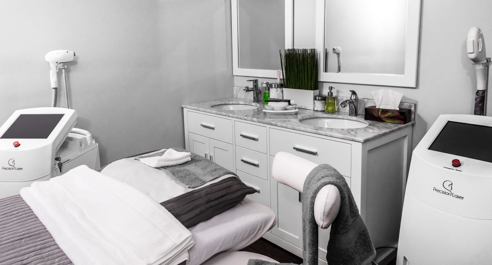

A clear path to care
Know where to start and who to see, before you arrive.
 THOUGHTFULLY DESIGNED. PERSONALLY DELIVERED.
THOUGHTFULLY DESIGNED. PERSONALLY DELIVERED.Specialist care, modern diagnostics,
and a little more human attention.

The right information. The right specialist. The space to ask a question. We believe these small things make a meaningful difference.
At Gara Medica, every part of your visit is considered — from finding your doctor to understanding what comes next.
Our approach to careFocused specialties. Connected care.
Find the right place to begin.
* Fictional specialist profiles and experience. Photographs are illustrative.
Less uncertainty. More understanding.
A patient experience that puts the pieces together.
Natural light. Quiet spaces. Room to breathe.
Considered surroundings for focused care.

01 / Reception
Privacy when you need it. A calm place to wait. A welcoming person to help you find your way.
Step inside our philosophyReference photography for the concept clinic.
Know where to start and who to see, before you arrive.
Discover the person and expertise behind your consultation.
Essential testing, explained in the context of your care.
Clear next steps and follow-up, when it is appropriate.
A test is one part of the picture. Know what an appointment involves, how to prepare, and who to talk to next.
Illustrative concept statistics. These are not real patient results or verified ratings.
“I knew who I was seeing, what to expect,Aysel R. / Fictional patient story
and what came next. That made
all the difference.”
Find your specialist. Choose your time. We’ll take it from there.